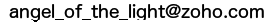

			<div class="content">
				<div class="container">
					<h2>Syllabus</h2>
					<p>This class about creating websites. If you wanna in future make a class or build websites you have to learn web programming. </p>
					Lessons:
					<ul>
						<li>First lesson: HTML</li>
						<li>Second lesson: HTML - area maps, tables and forms</li>
						<li>Third lesson: Styling</li>
						<li>Fourth lesson: W3.CSS</li>
						<li>Fifth lesson: Bootstrap</li>
				</ul>
				<h3>Homework</h3>
				<p>
					You can study in this class if you are not signed up and even if you are not a student of <a href="http://hol.org.uk" target="_blank">HOL.org.uk</a>. You can send me your home works and etc. But try at least to look at this site. [this thing will be changed, so catch a moment and go signed up]. In a letter with homework write your HOL ID and HOL name. I don't need to know your real name. You can generate a name at <a href="http://www.britishsurnames.co.uk/random" target="_blank">BritishSurnames</a>.
				</p>
				<p>
					In each homework, you will need to make a page with tags from lesson and information about HOL. It's okay if during your homework you're looking to programming lectures. It's normal situation when programmer read a reference to remember a thing. Feel free to use lectures or any other resources during your programming. <span class="alert-danger">But, do not dare to use any other reference, except your own memory on Final Exam</span>. You can do it yourself, it's not such a big thing to get not maximum on an exam. The <span class="quill">Quill</span> requirement is low enough to get it in a fair way.
				</p>
				<p class="alert alert-success">
					Your homework, project [and any other thing you send me] should be in <b>English</b>.
				</p>
				 <p class="alert alert-danger">If you will send me a work in a non-English language you will be dropped from class without explanation and turning back.</p>
				 <p class="alert alert-success">
				 	Please, send me only free-copyright or your own images. Images for your work you can get on <a href="http://freedigitalphotos.net">FreeDigitalPhotos.net</a>.
				 </p>
				 <h5>How to send homework</h5>
				 <p>
				 	Before sending finish it! Do not send me uncompleted works. If you have a question, please, ask the internet - any search engine [<a href="http://aol.co.uk/" target="_blank">Aol</a>, <a href="http://yahoo.com/" target="_blank">Yahoo</a>, <a href="http://bing.com/" target="_blank">Bing</a><!--, <a href="http://google.com/" target="_blank">Google</a>]--> or <a href="http://stackoverflow.com/" target="_blank">StackOverflow</a> [but I'm not sure that they will be glad to answer at your questions about this <b>simple</b> subject]. If you didn't find the answer, you can contact with me.
				 </p>
				 <p>
				 	Your homework should be in one file. What does it mean? It means, that all styles should be put in a <code>&lt;style&gt;&lt;/style&gt;</code> tags, all scripts should be also in this HTML file. Your images should be stocked in any image bucket on the internet [<a href="http://photobucket.com" target="_blank">PhotoBucket</a>] or in any <a href="https://creativecommons.org" target="_blank">Creative Commons'</a> resource. All long links [in <code>&lt;head&gt;&lt;/head&gt;</code> also!] should be shortened, by any link shortener service [<!--<a href="http://goo.gl/" target="_blank">Goo.gl</a>,--> <a href="http://bit.ly/" target="_blank">Bit.ly</a>]. Line count should be less than three hundred. If it will be between three hundred and three hundred and fifty I will take points from your homework, if it will be greater than three hundred and fifty I will reject. Pay attention.
				 </p>
				 <p>
				 	This one-file homework you should save in <a href="http://gist.github.com/" target="_blank">Gist GitHub</a>, short the link, send me in a letter to  and patiently wait for the answer.
				 </p>
				<h3>Extra homework</h3>
				<p>In each <strong>extra</strong> homework you will need to add to your homework extra tags from:
					<ul>
						<li><a href="http://w3schools.com" target="_blank">W3Schools.com</a></li>
						<li><a href="http://codecademy.com" target="_blank">Codeacademy.com</a></li>
						<li><a href="http://thenewboston.com" target="_blank">thenewboston.com</a></li>
						<li><a href="http://codeschool.org" target="_blank">codeschool</a></li>
					</ul>
					or any other source you will find.
				</p>
				<h3>Project and Final Exam</h3>
				<p>
					You can pick a project. If you did all your home works it will be easy for you to make a project from it, because in the project you will need to make an information web page about HOL.
				</p>
				<p>
					Each homework let earn you up to thirty points. Project and final exam, each of them will let you earn up to thirty-five.
				</p>
				<p class="alert alert-success">
					To get a <span class="quill">Quill</span> you have to collect one hundred and seventy points.
				</p>
				<p>
					In future I wanna add here jQuery, PHP and MySQL lessons.
				</p>
				<p>
					It's non-profit project. Here is no ads or donate buttons. Have fun.
				</p>
				</div>
			</div>
